1. 애자일 방법론과 스크럼(Scrum) (원본 p.15-22)
본 강좌는 CISA 시험 직전 총정리(개론) 성격의 과목으로, SE01~SE08에서 다룬 핵심 주제를 다시 한 번 압축 복습하면서 CMMI 2.0, ISO 26262/ASIL, ITIL, FOSS 라이선스 등 앞서 다루지 않은 최신·심화 주제를 보강한다. 기출·예상문제 중심으로 구성되어 있으므로, 각 소단원은 문제풀이형 해설로 정리한다.
가. 애자일(Agile) 개발방식의 전체 흐름
애자일 개발은 요구사항 정의서·User Story·제품 백로그(Product Backlog)를 바탕으로 짧은 반복 주기(Release)를 거듭하며 점증적으로 시스템을 완성해 나가는 개발방식이다. 분석/설계 단계에서 확정된 요구사항 명세서와 테스트 계획서를 바탕으로 개발·통합테스트·수용 단계를 반복하며, CI(Continuous Integration)와 TDD(Test Driven Development)를 결합해 릴리즈 #1, #2, … #N을 지속적으로 배포한다.
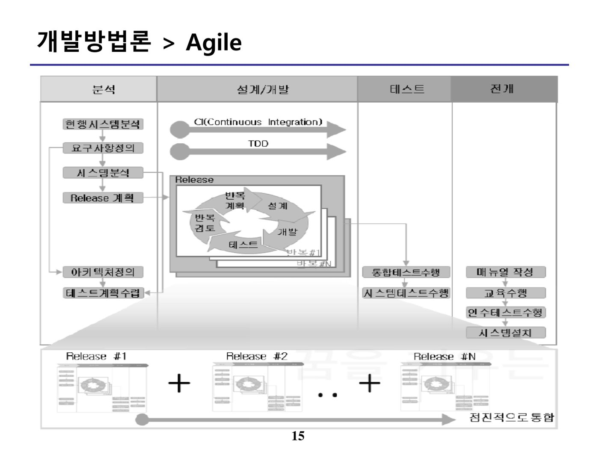
나. 스크럼(Scrum)의 구성요소와 역할
스크럼은 애자일 방법론 중 가장 널리 쓰이는 프레임워크로, Product Owner·Scrum Master·Developer·Designer·QA가 하나의 팀을 이루어 스프린트(Sprint) 단위로 개발을 진행한다. Product Owner는 제품 백로그의 우선순위를 결정하는 기획 책임자이며, Scrum Master는 팀이 스크럼 프로세스를 원활히 수행하도록 돕는 조력자(Servant Leader)이다.
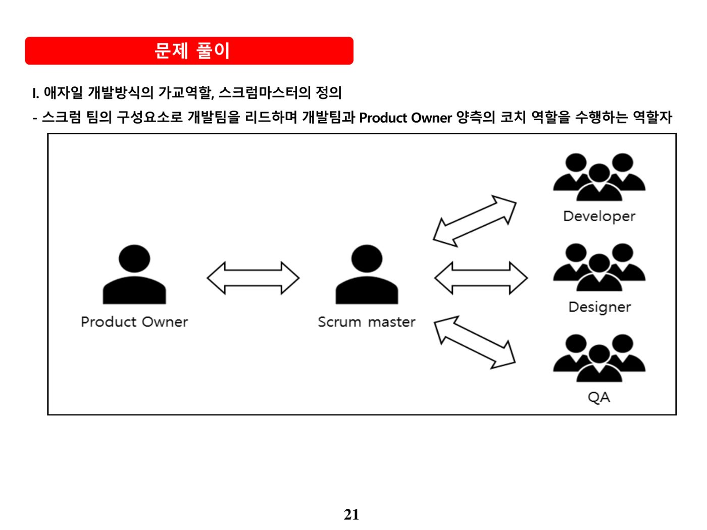
| 역할 | 설명 |
|---|---|
| 애자일 코치 | 스크럼의 Product Owner와 개발팀의 코치 역할을 겸하며, 애자일 코치로서 팀의 성숙도를 높이는 역할 수행 |
| 프로세스 지휘자 | 스크럼팀에서 수행해야 하는 프로세스를 정의하고 개선하며, 팀 특화된 스크럼 접근법 개발을 지원 |
| 변화관리자 | 스크럼팀 및 프로젝트 내부 조직의 변화관리를 수행하고 외부 이해관계자와의 변화 이슈를 조율 |
| 서번트 리더(Servant Leader) | 팀을 지시하기보다 지원·보호하는 리더십 스타일 — 스크럼 마스터에게 가장 적합한 스타일 |
| 스크럼팀 보호자 / 장애물 제거자 | 팀이 외부 간섭 없이 스프린트에 집중할 수 있도록 장애물을 식별하고 제거 |
스크럼 마스터는 Product Backlog Planning Meeting, Sprint Planning Meeting, 회고(Retrospective) 미팅을 리딩하지만, PO의 고유 권한인 기획에 대한 의사결정 자체는 수행하지 않는다 — 이는 스크럼 마스터와 PO의 역할을 구분하는 핵심 포인트로 자주 출제된다.
다. Story Point 산정
Story Point는 User Story별 상대적 난이도·작업량을 피보나치 수열(1, 2, 3, 5, 8, 13, …) 형태의 숫자로 추정하는 산정 기법이다. 무한대(∞) 기호는 현재 시점에서 산정이 어렵거나 불가능한 항목을 표현하는 데 사용하며, 이는 프로젝트 범위·원가 산정 기법이 아니라 팀이 상대적 작업량에 합의하기 위한 커뮤니케이션 도구라는 점에 유의한다.
2. 객체지향(OOP) 핵심 개념 총정리 (원본 p.23-37)
가. 객체지향의 5대 특성
| 특성 | 설명 |
|---|---|
| 캡슐화(Encapsulation) | 서로 관련성이 많은 데이터와 이를 처리하는 함수(메서드)를 하나로 묶어 처리하는 특성. 실제 구현 내용의 일부를 외부에 감추어 은닉하는 것은 캡슐화 자체의 정의가 아니라 정보은닉과 결합되었을 때의 효과라는 점에 유의(자주 출제되는 함정) |
| 추상화(Abstraction) | 복잡한 문제를 다루는 가장 기본적인 메커니즘. 현실 세계의 사물을 객체로 표현하는 개념으로, 기능 추상화·데이터 추상화·제어 추상화로 구분 |
| 다형성(Polymorphism) | 동일한 이름의 메서드가 객체(클래스)에 따라 다르게 동작하는 특성. 오버로딩·오버라이딩으로 구현 |
| 상속성(Inheritance) | 상위 클래스의 속성과 메서드를 하위 클래스가 물려받아 재사용하는 특성 |
| 연관성(Association) | 객체와 객체 사이의 의미 있는 관계를 표현하는 특성 |
나. 오버로딩(Overloading) vs 오버라이딩(Overriding)
| 구분 | 오버로딩(Overloading) | 오버라이딩(Overriding) |
|---|---|---|
| 정의 | 같은 이름의 메서드를 매개변수의 개수·타입을 다르게 하여 한 클래스 내에 여러 개 정의 | 상위 클래스에 있는 메서드와 똑같은 이름·시그니처의 메서드를 하위 클래스에서 다시 만드는 행위(메서드 재정의) |
| 다형성 유형 | 컴파일 타임(정적) 다형성 | 런타임(동적) 다형성 |
| 지원 언어 | Ada, C#, C++, Java 등 다양한 언어에서 지원. C언어는 지원하지 않음 | Java 등 상속을 지원하는 객체지향 언어에서 지원 |
| 비고 | 상위 클래스의 메서드를 하위 클래스에서 다시 만드는 것이 오버라이딩이며, 상위 클래스(부모) 메서드는 무시되고 하위 클래스 메서드가 호출된다 | 예) Animal.sayHello() → Baby extends FaFa일 때 Baby b = new Baby(); b.sayHello();는 Baby의 오버라이딩된 sayHello()를 호출 |
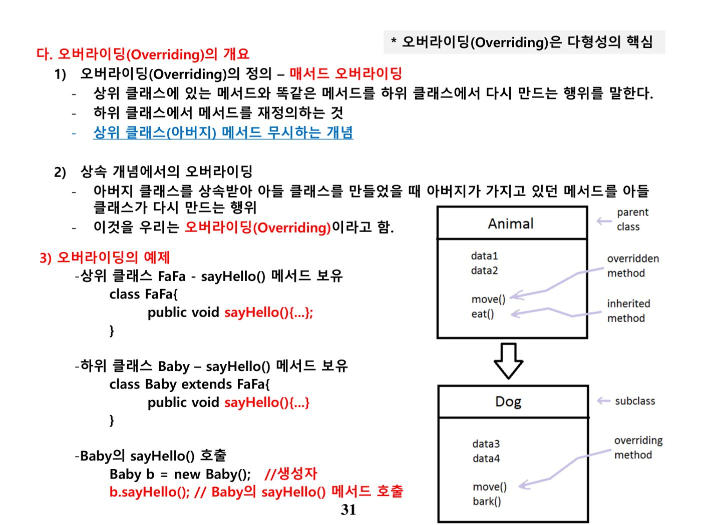
다. 정보은닉과 접근 제어자
정보은닉(Information Hiding)은 객체 내부의 구현 세부사항을 외부로부터 감추어 외부에서는 공개된 인터페이스로만 접근하도록 하는 원리이며, 자바 등에서는 4가지 접근 제어자로 구현한다.
| 접근 제어자 | 같은 클래스 | 같은 패키지 | 자식 클래스 | 전체 |
|---|---|---|---|---|
| private | O | X | X | X |
| default(package-private) | O | O | X | X |
| protected | O | O | O | X |
| public | O | O | O | O |
3. UML 관계와 디자인 패턴 (원본 p.38-51)
가. UML의 4대 관계
UML 클래스 다이어그램에서 클래스 간 관계는 연관(Association)·의존(Dependency)·일반화(Generalization)·실체화(Realization) 4가지로 구분한다. 흔히 "연의 GR"(연관·의존·일반화·실체화)로 암기한다.
| 관계 | 기호 | 의미 |
|---|---|---|
| 연관(Association) | 실선 | 클래스 간 의미 있는 관계·연결. 멤버 변수로 참조를 갖는 형태 |
| 의존(Dependency) | 점선 화살표 | 한 클래스가 다른 클래스를 일시적으로 사용(파라미터, 지역변수 등) |
| 일반화(Generalization) | 실선 + 속이 빈 삼각형 화살표 | 상속 관계 — 하위 클래스가 상위 클래스의 속성·메서드를 물려받음 |
| 실체화(Realization) | 점선 + 속이 빈 삼각형 화살표 | 인터페이스와 이를 구현(implements)하는 클래스 간의 관계 |
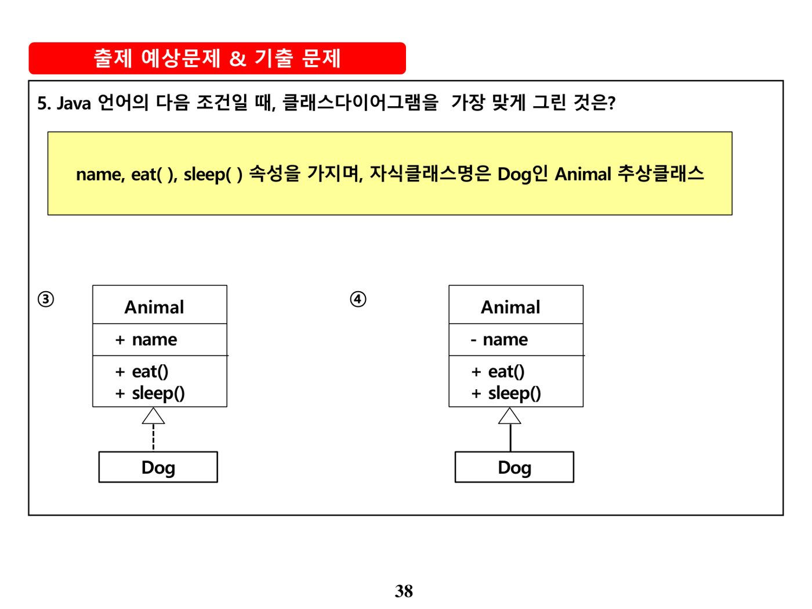
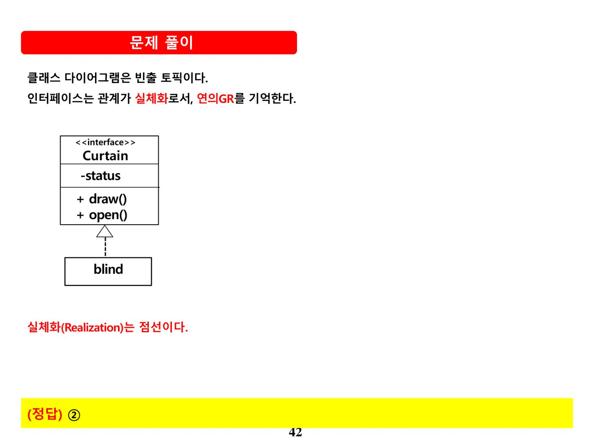
나. 추상클래스 vs 인터페이스
| 구분 | 추상클래스(Abstract Class) | 인터페이스(Interface) |
|---|---|---|
| 관계 | 일반화(상속, extends) | 실체화(구현, implements) |
| 메서드 | 일반 메서드 + 추상 메서드 혼용 가능 | 원칙적으로 추상 메서드(시그니처)만 정의(Java 8+부터 default/static 메서드 허용) |
| 다중 상속 | 단일 상속만 가능 | 다중 구현(implements) 가능 |
| 목적 | 공통 기능을 부분적으로 미리 구현해 코드 재사용 | 클래스가 반드시 구현해야 할 규약(Contract)을 정의 |
다. GOF 디자인 패턴의 분류
GOF(Gang of Four) 디자인 패턴은 생성(Creational)·구조(Structural)·행위(Behavioral) 3가지 유형, 총 23가지로 분류된다.
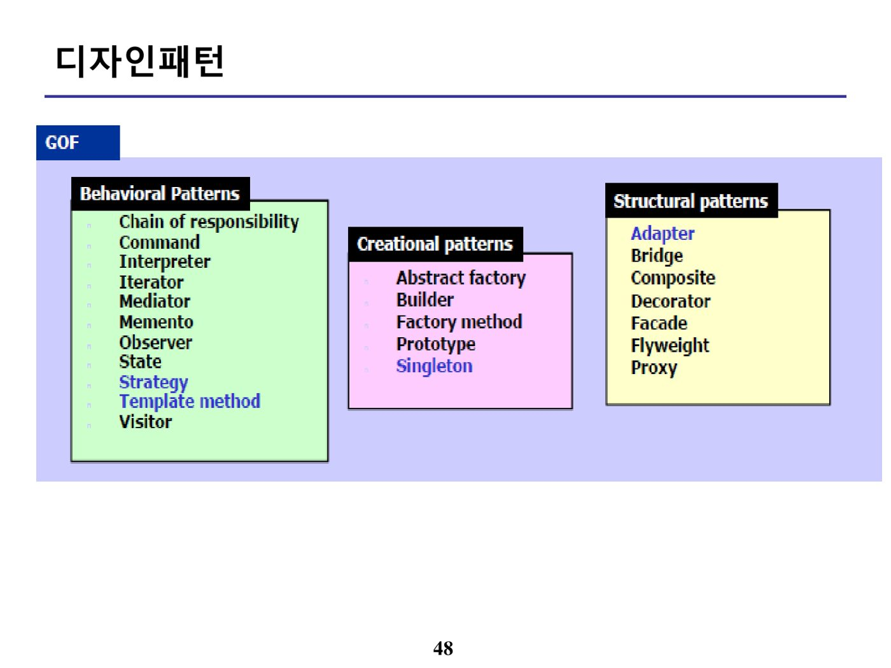
라. Factory Method 패턴
Factory Method 패턴은 객체 생성 로직을 서브클래스로 위임하는 생성 패턴으로, Creator(추상 생성자)가 FactoryMethod()를 선언하고 ConcreteCreator가 이를 구현하여 ConcreteProduct 객체를 생성한다.
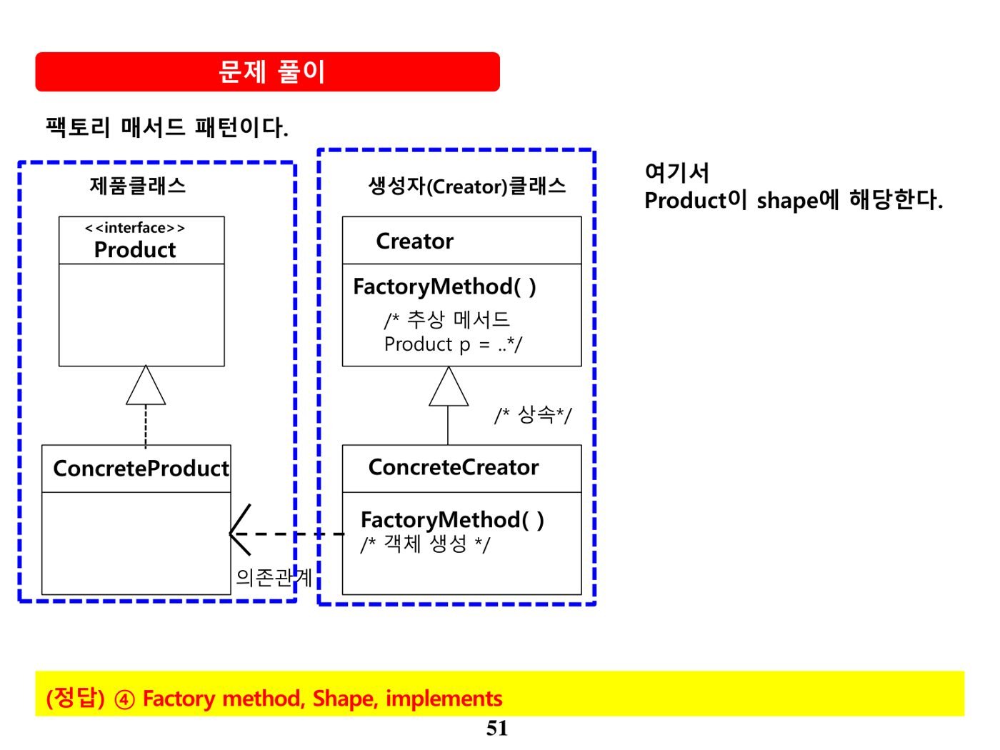
Java 예시에서는 도형(Shape) 인터페이스를 Circle·Rectangle·Triangle이 구현(implements)하고, ShapeFactory 클래스의 getShape(String)이 문자열 값에 따라 알맞은 ConcreteProduct 객체를 생성해 반환하는 형태로 구현된다.
4. SW 아키텍처와 MSA (원본 p.54-69)
가. SW 아키텍처 표준과 평가 방법론
| 구분 | 내용 |
|---|---|
| IEEE 1471 / ISO 42010 | 아키텍처 기술(記述)에 대한 국제 표준. 이해관계자별 관점(View Point)에 따라 아키텍처를 다양한 뷰로 표현하도록 규정 |
| 4+1 View 모델 | 논리(Logical)·프로세스(Process)·개발(Development)·물리(Physical) 4개 뷰와 이를 통합하는 유스케이스(Use Case) 시나리오(+1)로 아키텍처를 표현 |
| ATAM(Architecture Tradeoff Analysis Method) | 아키텍처 대안들이 품질속성 요구사항을 어떻게 절충(Trade-off)하는지 분석하는 아키텍처 평가 방법론 |
| CBAM(Cost Benefit Analysis Method) | ATAM에 비용·편익 분석을 결합해 아키텍처 결정의 경제적 타당성까지 평가하는 방법론 |
나. 대표적 아키텍처 스타일
| 스타일 | 설명 |
|---|---|
| 클라이언트/서버(Client/Server) | 서버가 클라이언트라 불리는 서브시스템에 서비스를 제공. 클라이언트는 사용자 입력을 받아 범위를 체크하고 트랜잭션을 구동, 서버는 트랜잭션을 수행하고 데이터 일관성을 보장(예: 3-tier 클라이언트-서버) |
| 계층(Layered) 스타일 | 시스템을 계층으로 나누어 각 계층이 바로 아래 계층의 서비스만 이용하도록 구조화 |
| MVC(Model-View-Controller) 모델 | 데이터(Model)·화면(View)·제어 로직(Controller)을 분리해 유지보수성과 재사용성을 높이는 스타일 |
| 저장소(Repository) 구조 스타일 | 중앙 데이터 저장소를 여러 서브시스템이 공유하며 접근하는 스타일 |
다. MSA(Micro Service Architecture)
MSA는 하나의 애플리케이션을 독립적으로 배포 가능한 작은 서비스 단위로 분할하는 아키텍처 스타일이다. 시스템의 기능 분할, WAS의 복제, 데이터의 분할을 통해 부하를 분산시키며, 서비스 간 통신에는 RESTful 기술과 Observer Pattern 등이 활용된다.
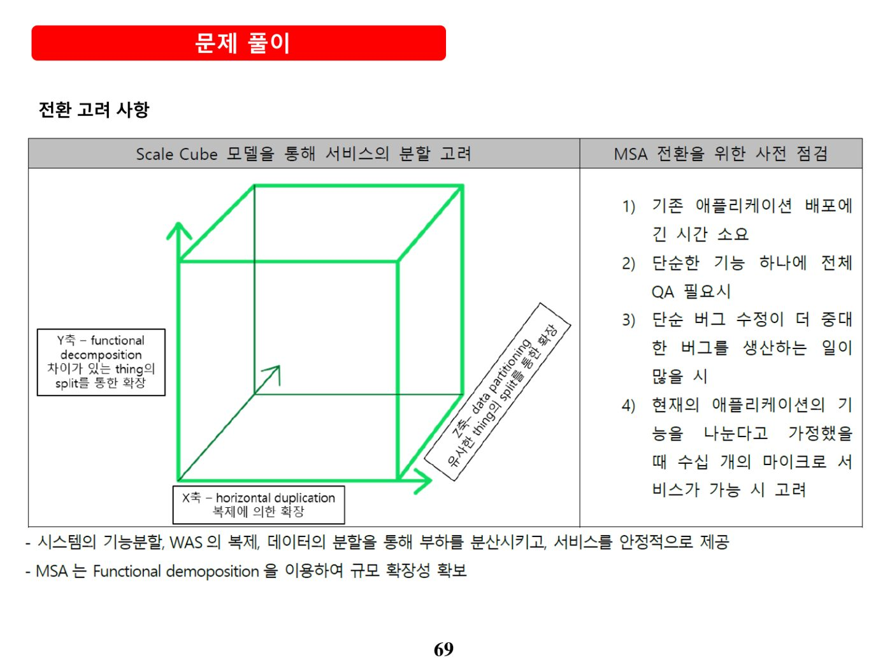
다만 다수의 개발자·많은 개발 작업·다양한 서비스가 필요한 대규모 조직에서는 MSA가 오히려 관리 복잡도를 높일 수 있어, 상황에 따라 모노리틱(Monolithic) 아키텍처를 유지하는 것이 더 합리적일 수 있다는 점도 출제 포인트다.
5. 전자정부프레임워크와 Spring(IoC/DI/AOP) (원본 p.57-66)
가. 전자정부 표준프레임워크 개요
전자정부 표준프레임워크는 공공 SW사업의 표준 개발환경을 제공하기 위해 마련된 오픈소스 기반 프레임워크로, 실행환경은 7개 서비스 그룹으로 구성되며 38개 서비스를 제공한다. 관점지향 프로그래밍(AOP) 사상을 구현·지원하며, 데이터 처리를 위해 ORM과 MyBatis를 제공하고, 의존성 주입(DI) 사상이 반영되어 있다.
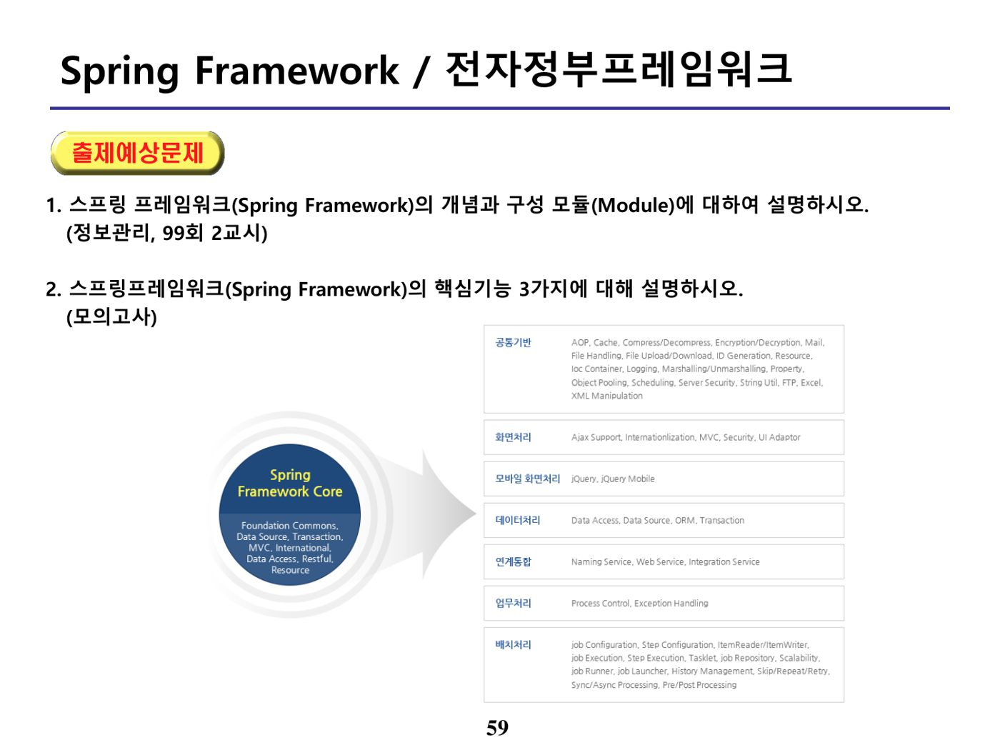
나. Spring 프레임워크의 계층 구조
| 계층/모듈 | 구성 요소 |
|---|---|
| 업무기능 | 화면처리·업무처리·데이터처리 등이 동일연계/배치처리와 공통기반 위에서 동작 |
| 공통기반(데이터 처리) | DAO/JDBC — iBatis SQL Map, MyBatis |
| 공통기반(연동) | DataSource — Spring |
| 공통기반(영속성) | ORM — Hibernate, Spring Data JPA |
| 공통기반(트랜잭션) | Transaction — Spring |
| WEB | STRUTS, JSF, JSP |
| 공통 기반(IOC/AOP) | Core — IoC 컨테이너, AOP |
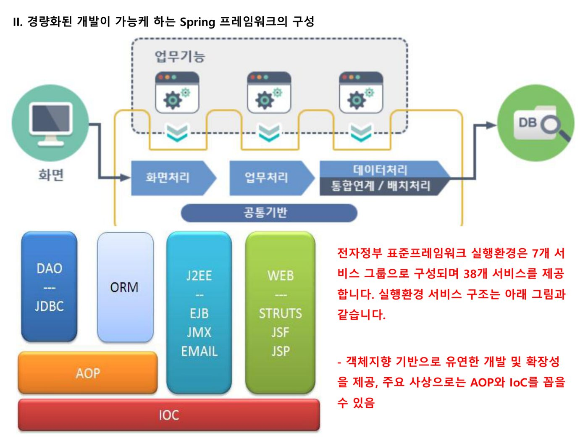
다. IoC(제어의 역전)와 DI(의존성 주입)
IoC(Inversion of Control)는 객체의 생성과 생명주기 관리를 개발자가 아닌 프레임워크(컨테이너)가 담당하는 원리로, "Hollywood Principle"(Don't call us, we'll call you)로 비유된다. Spring 컨테이너가 POJO(Plain Old Java Object)를 생성·조립·관리하며, 이때 객체가 필요로 하는 의존 객체를 컨테이너가 대신 주입해 주는 것이 DI(Dependency Injection)이다.
| DI 유형 | 설명 |
|---|---|
| Setter Injection | setter 메서드를 통해 의존 객체를 주입 |
| Constructor Injection | 생성자의 파라미터를 통해 의존 객체를 주입 — 불변성 보장에 유리 |
| Method Injection | 임의의 메서드를 통해 의존 객체를 주입 |
DL(Dependency Lookup, 의존성 검색)이 객체가 직접 컨테이너에서 필요한 의존 객체를 찾아오는 방식이라면, DI는 컨테이너가 능동적으로 의존 객체를 대상에게 주입해 준다는 점에서 방향이 반대다.
라. ORM(Object-Relational Mapping)
ORM은 객체지향 프로그램의 클래스와 관계형 데이터베이스의 테이블 간 매핑(Forward/Backward Mapping)을 자동화하는 기술로, 클래스 다이어그램과 DB 테이블 간 매핑 관계를 설명할 때 iBatis·MyBatis·Hibernate 등이 예시로 함께 출제된다.
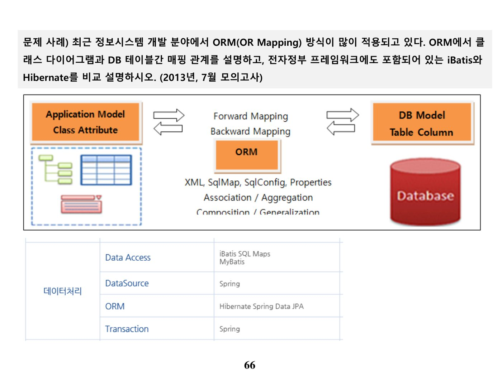
6. SW 테스트 종합복습 (원본 p.70-97)
가. 테스트 드라이버와 테스트 스텁
통합 테스트에서 아직 개발되지 않은 하위/상위 모듈을 대신하기 위해 테스트 하네스를 구성하는데, 테스트 드라이버(Test Driver)와 테스트 스텁(Test Stub)이 그 핵심 구성요소다.
| 구분 | 정의 | 사용 방향 |
|---|---|---|
| 테스트 드라이버(Test Driver) | 테스트 대상 하위 모듈을 호출하기 위해 상위 모듈을 대신 만든 것 (예: "상품조회"를 테스트하기 위해 "로그인 모듈"을 임시로 만든 경우) | 상향식(Bottom-Up) 통합 테스트에서 사용 |
| 테스트 스텁(Test Stub) | 테스트 대상 상위 모듈이 호출하는 하위 모듈을 대신 만든 것 (예: "로그인 모듈"을 테스트하기 위해 "결제 모듈"을 임시로 만든 경우) | 하향식(Top-Down) 통합 테스트에서 사용 |
"로그인 모듈을 테스트하기 위해 결제 모듈을 만든 것은 상향식 테스트이다"라는 선지는 틀린 설명이다 — 상위 모듈이 하위 모듈을 대신하는 스텁을 만든 것이므로 이는 하향식 테스트에 해당한다.
나. C언어 코드 트레이스(단축 평가) 문제
논리 연산자의 단축 평가(Short-circuit Evaluation) 규칙을 이해하면 코드 트레이스 문제를 빠르게 풀 수 있다. &&(AND)는 좌변이 거짓이면 우변을 평가하지 않고, ||(OR)는 좌변이 참이면 우변을 평가하지 않는다.
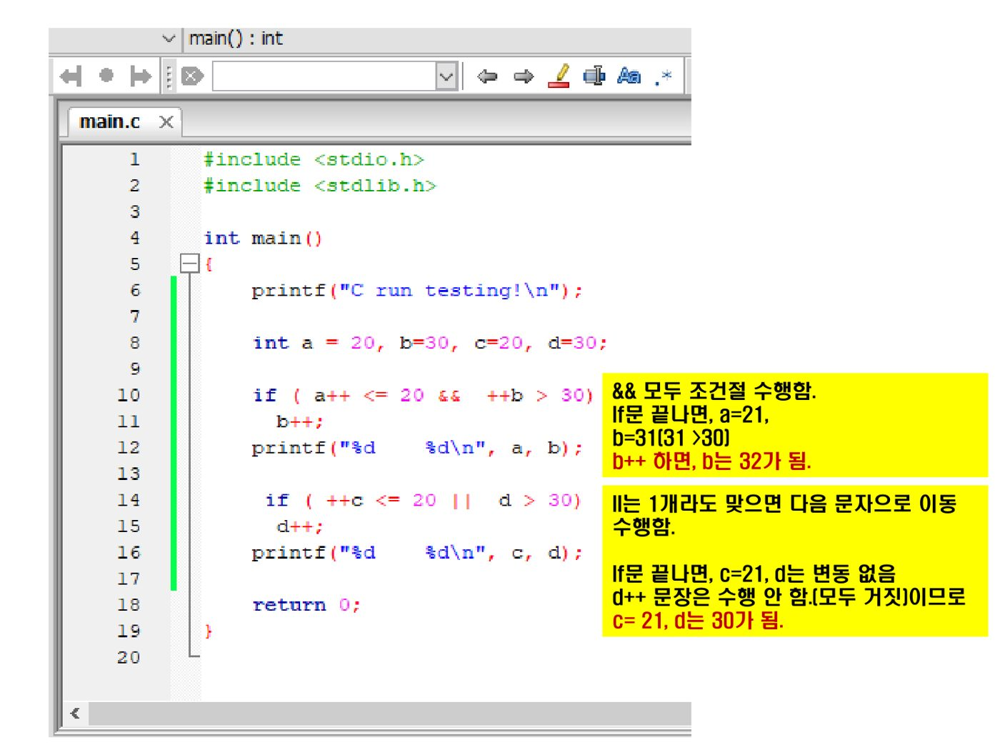
30) b++; 및 if(++c <= 20 || d > 30) d++; 두 조건문의 단축평가 결과를 확인하는 예제 코드">풀이: a++ <= 20은 참(20≤20, 이후 a=21)이고 ++b > 30은 거짓(b=31, 31>30은 참 — 두 조건 모두 참이므로 b++가 수행되어 최종 a=21, b=32)이다. 두 번째 문장은 ++c <= 20이 참(c=21… 실제로는 21≤20이 거짓)이 아니면 OR 뒤의 d>30을 평가하는데, 원 강의자료 해설 기준 최종 결과는 c=21, d=30이다.
다. 성능 테스트 지표와 Little's Law
| 지표 | 설명 |
|---|---|
| Named User | 시스템에 등록된 전체 사용자 수 |
| Concurrent User | 특정 시점에 시스템에 접속(로그인)해 있는 사용자 수 |
| Active User | 해당 시점에 실제로 요청을 전달하고 응답을 대기 중인 사용자 수 |
| Response Time | 요청 전송부터 응답 수신까지 걸리는 시간 |
| Think Time | 사용자가 응답을 받은 후 다음 요청을 보내기까지 생각하는 시간 |
| TPS(Transaction Per Second) | 초당 처리 가능한 트랜잭션 수 |
리틀의 법칙(Little's Law)에 따르면 TPS = Active User(동시 작업 처리 중인 사용자 수) / 평균 응답시간(Mean Response Time)이다. "TPS = Concurrent User / 평균응답시간"이라는 표현은 Active User와 Concurrent User를 혼동한 오답으로 자주 출제된다.
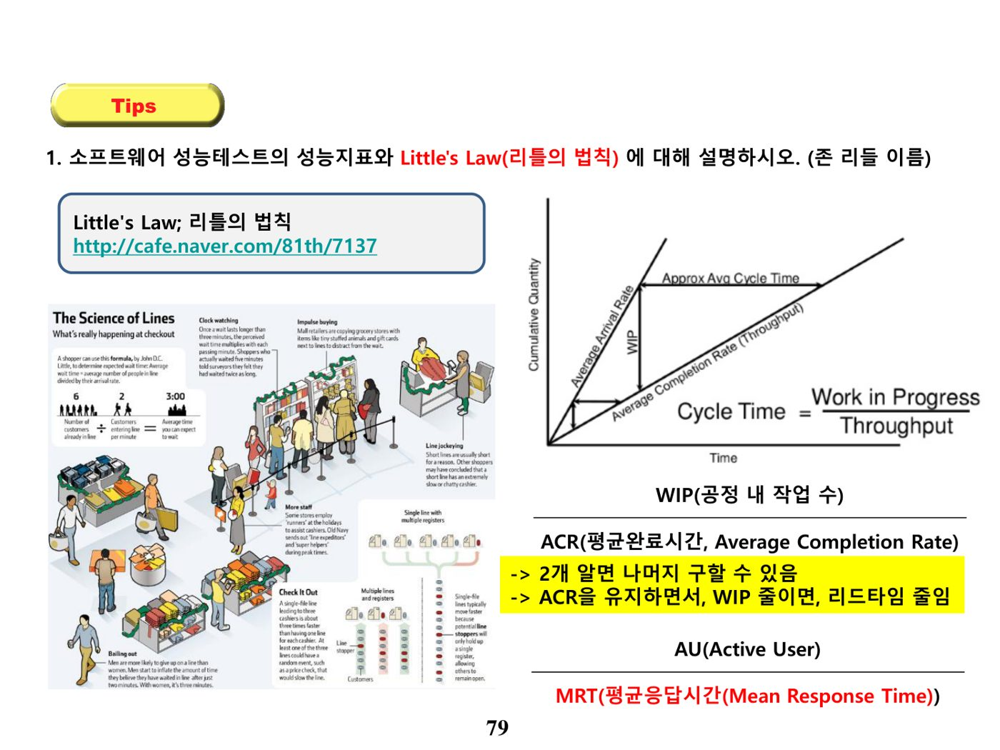
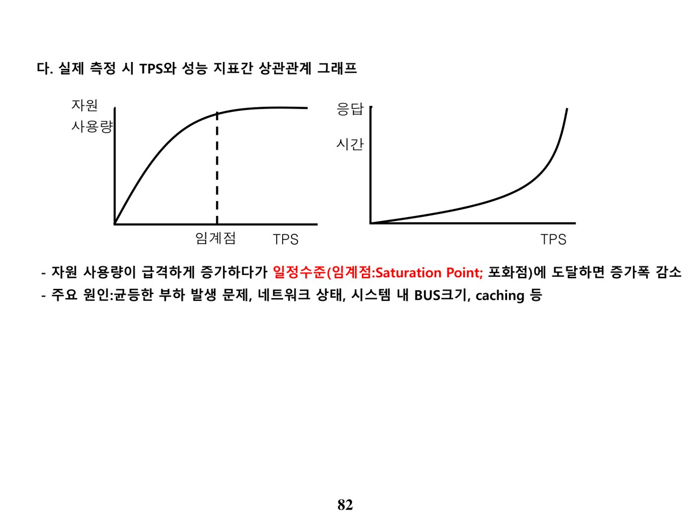
자원 사용량이 급격히 증가하다가 일정 수준(임계점, Saturation Point)에 도달하면 증가폭이 둔화되는 것은 자원 경합(부하 발생, 네트워크 상태, 시스템 내 버스 크기, Caching 등)이 주요 원인이다.
라. 성능 테스트 기법과 리스크기반 테스트
| 성능테스트 기법 | 설명 |
|---|---|
| 루프백 테스트(Loop-back Test) | 한 통신 장비에서 신호를 보내 일정 구간의 회선을 거친 뒤 다시 원점으로 되돌아오도록 하는 시험 |
| 스파이크 테스트(Spike Test) | 짧은 시간에 사용자·부하가 급증할 때 시스템이 견디는지 검증하는 테스트 |
| 티어 테스트(Tier Test) | 계층(Tier)별로 나누어 각 계층의 성능 병목을 검증하는 테스트 |
| 가용성 테스트(Availability Test) | 장애 상황에서도 서비스가 지속 가능한지 검증하는 테스트 |
리스크기반 테스트(Risk Based Testing)는 장애 발생 가능성(기술적 리스크)과 장애로 인한 영향(사업적 리스크) 2가지 축으로 우선순위를 결정해 테스트 자원을 배분하는 기법이다.
| 영역 | 의미 |
|---|---|
| ITA(Intensive Test Area) | 테스트 필요 영역 |
| STA(Severe Test Area) | 반드시 테스트가 필요한 영역(리스크가 가장 높음) |
| FTA(Fundamental Test Area) | 테스트하지 않을 수도 있는 영역(리스크가 가장 낮음) |
| STTA(Strong Test Area) | 테스트가 필요한 영역 |
리스크기반 테스트의 목적은 전체 기능을 중요도와 무관하게 동일한 비중으로 테스트하는 것이 아니라, 사업적·기술적 리스크가 높은 영역에 우선순위를 두어 테스트 자원을 효과적·효율적으로 투입하는 것이다.
마. 퍼즈 테스팅(Fuzz Testing)
퍼즈 테스팅은 예기치 못한 에러나 충돌을 일으키기 위해 소프트웨어에 무작위(비정상) 데이터를 입력하는 SW 취약점 테스트 기법이다. 프로그램 충돌, 코드 내 오류, 메모리 누수 같은 예외적 상황을 찾을 때 사용하며, 퍼징 데이터 처리 방법으로는 생성 기반(Generation-based)과 변이 기반(Mutation-based)이 있다. "AI의 모호함(Fuzzy)을 다루는 기법이다"는 이름의 유사성을 이용한 오답 함정이므로 주의한다.
바. Black Box / White Box 테스트
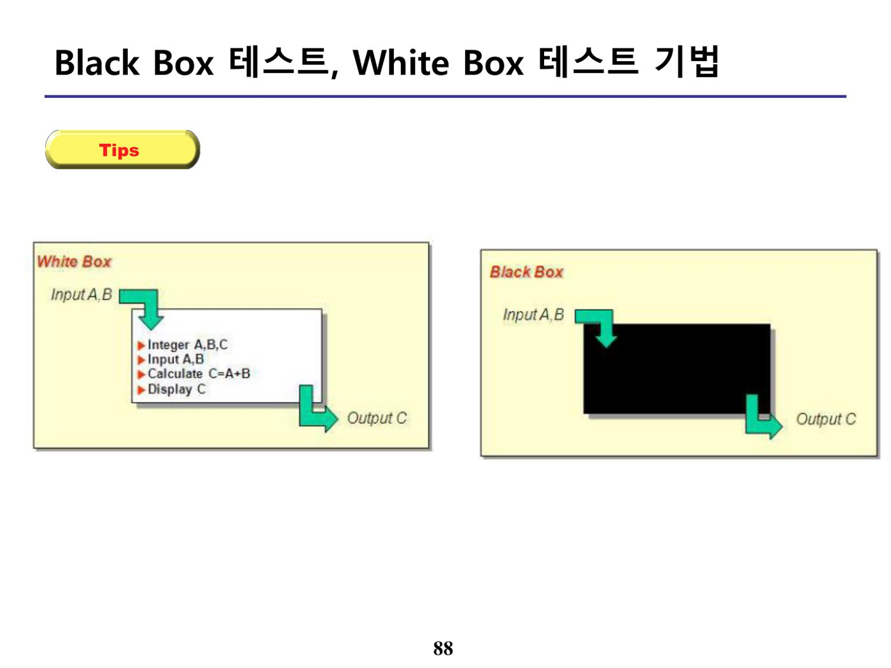
White Box 테스트는 코드 내부 로직·구조(문장/분기/조건 커버리지 등)를 검증하고, Black Box 테스트는 내부 구현과 무관하게 입력에 대한 출력 결과만으로 검증한다. SE07에서 다룬 "블동경의상"(블랙박스: 동등분할·경계값분석·의사결정테이블·상태전이) / "화제루"(화이트박스: 문장커버리지·분기커버리지·조건커버리지 등의 앞글자) 암기법을 그대로 적용한다.
사. 커버리지(Coverage) 기준
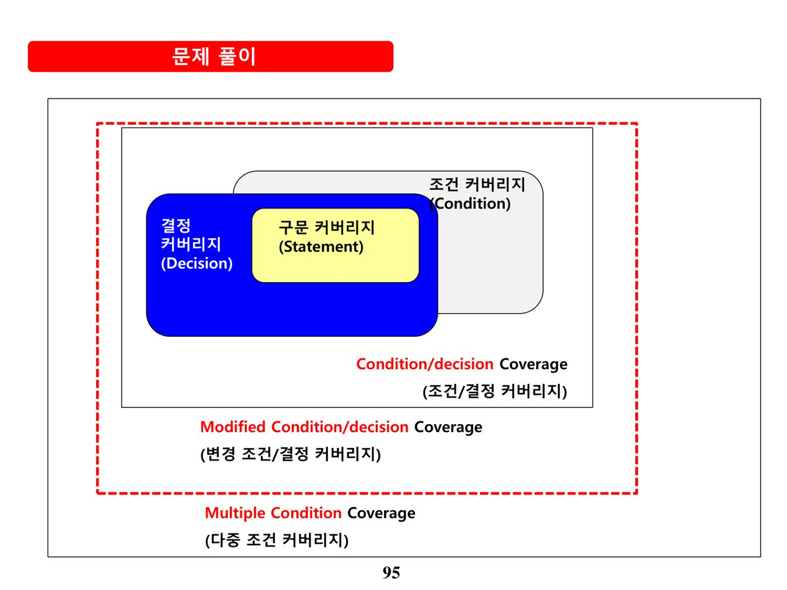
구조(White Box) 기반 테스트는 커버리지가 기반이 되며, 가장 엄격한 기준은 다중 조건 커버리지(Multiple Condition Coverage)이다. "테스트 상황에 따라 커버리지 기준을 유연하게 판단한다"는 식의 표현은 오답으로 자주 출제된다 — 커버리지 기준은 테스트 계획 단계에서 명확히 정의되어야 한다.
7. SW 품질표준 종합복습(ISO9126→25010, PMBOK) (원본 p.100-117)
가. ISO 9126 → ISO 25010 전환
ISO/IEC 9126은 ISO/IEC 25010으로 대체되었으며, 하위 규격들도 SQuaRE(25000번대) 체계로 재편되었다. ISO 25023은 제품 품질(Product Quality) 측정을 정의하는 표준이다.
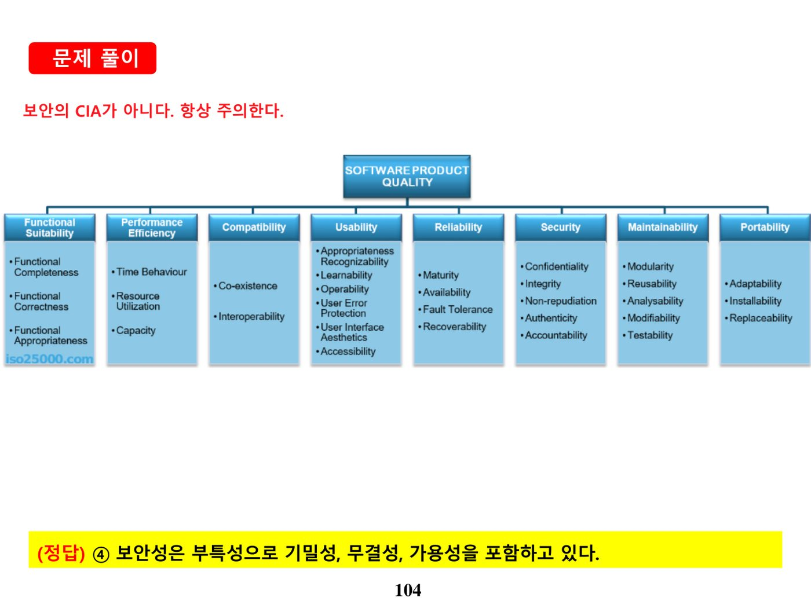
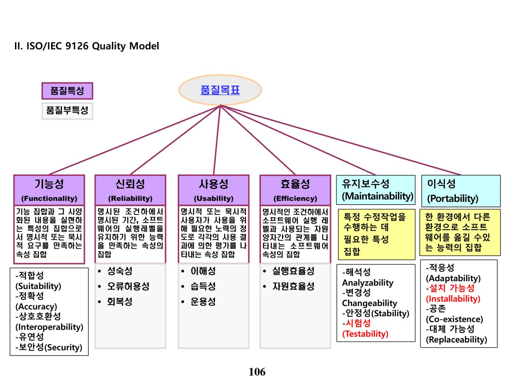
ISO 25010은 기존 9126의 6대 특성에 호환성(Compatibility)과 보안성(Security)을 주특성으로 추가해 8대 특성 체계로 확장했다.
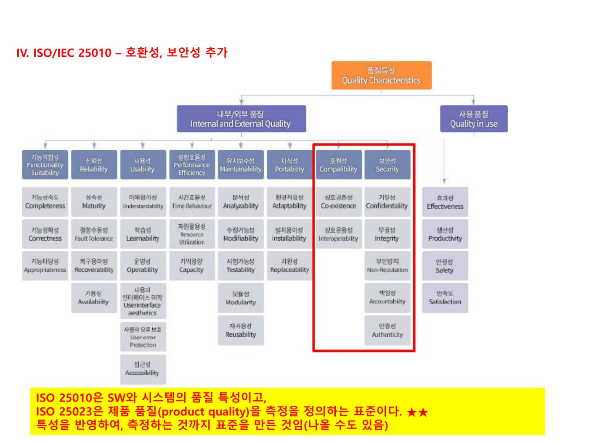
보안성(Security)의 부특성은 기밀성(Confidentiality)·무결성(Integrity)·부인방지(Non-repudiation)·책임추적성(Accountability)·인증성(Authenticity)으로 구성된다 — 보안의 3대 요소인 CIA(기밀성·무결성·가용성)와는 다르므로 "보안성 부특성에 가용성이 포함된다"는 선지는 오답이다.
나. PMBOK 품질관리 3대 프로세스
| 프로세스 | 정의 |
|---|---|
| 품질관리(Manage Quality, 舊 품질보증) | 프로젝트에서 조직의 품질관리 정책을 반영하는 품질 활동들을 실행하여 품질관리 계획을 적용하는 프로세스 |
| 감사(Audit) | 프로젝트 활동들이 조직·프로젝트의 정책, 프로세스, 절차를 준수하는지 결정하는 조직적이고 독립적인 프로세스. Good/Best Practice 식별, 결점 식별, 팀 생산성 향상을 목적으로 한다 |
| 품질통제(Control Quality) | 프로젝트 산출물이 완전성·정확성·기대치를 준수하는지 성과를 평가하기 위해 수행한 품질관리 활동의 결과를 감시·기록하는 프로세스 |
PMBOK Manage Quality의 데이터 표현(Data Representation) 도구로는 친화도(Affinity Diagram), 인과관계도(Cause-and-Effect/Fishbone Diagram), 흐름도(Flowchart), 히스토그램(Histogram), 매트릭스 다이어그램(Matrix Diagram), 산점도(Scatter Diagram) 등 7가지 품질 도구가 활용되며, Design for X, 문제해결(Problem Solving), 품질개선방법(PDCA 등)도 대표적 기법이다.
8. GS 인증과 CMMI(v2.0) (원본 p.118-142)
가. GS(Good Software) 인증 개요
GS 인증은 국산 SW 제품의 품질 향상을 통한 국내 SW 산업 활성화 정책으로 국제표준을 기반으로 개발한 한국형 SW 품질 인증제도(제품 품질 인증)다. 한국정보통신기술협회(TTA)가 국내 소프트웨어의 완성도를 평가하고 일정 수준 이상의 기술력·사용성·신뢰성을 갖춘 제품에 지식경제부 장관이 국가인증마크를 부여한다.
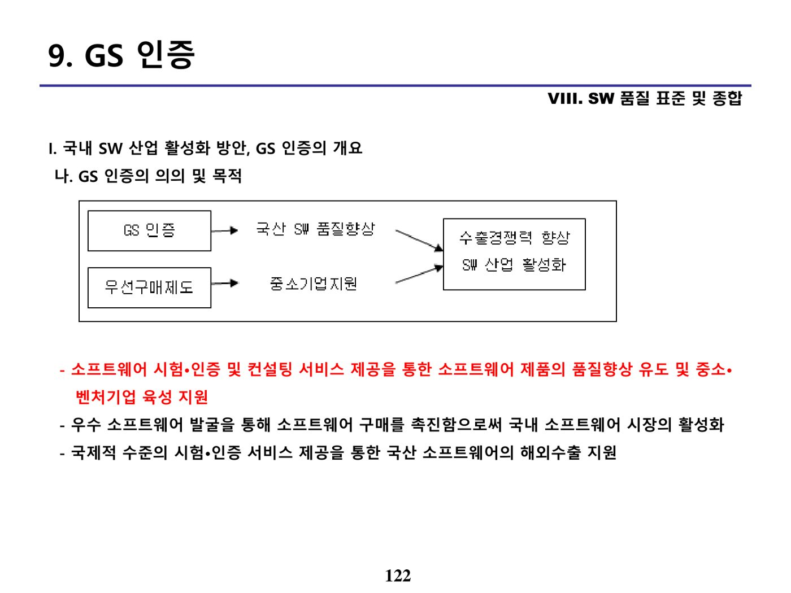
나. GS 인증 SW 품질 평가 프레임워크
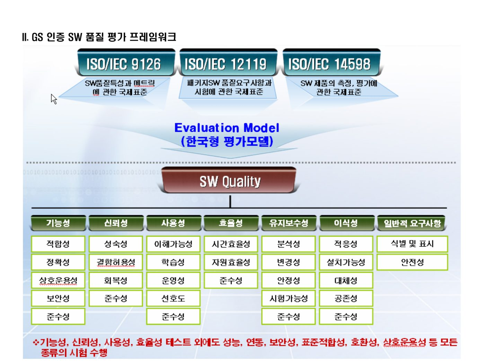
GS 인증은 ISO/IEC 25050·25040이 아니라 ISO/IEC 25023·25041을 반영해 평가모델을 개정했다는 점이 자주 출제된다 — 9126-2에서 25023으로, 14598/12119에서 25040·25051로 변경된 것을 GS 인증 표준에 반영한 것이다.
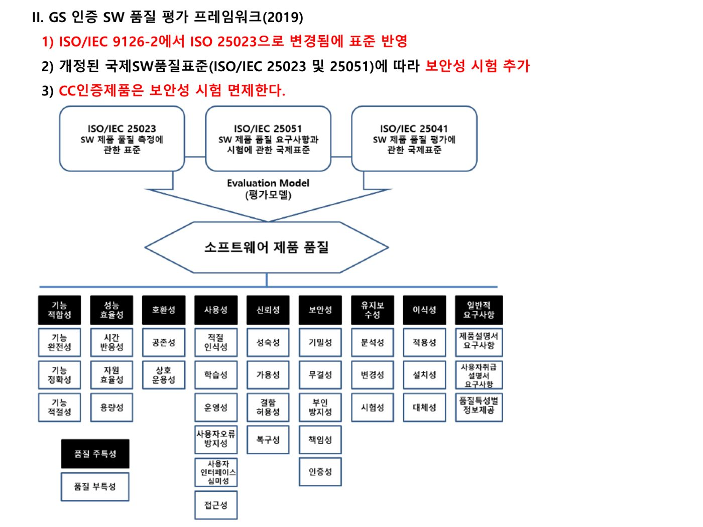
또한 CC(Common Criteria, 국제공통평가기준) 인증을 이미 취득한 제품은 GS 인증에서 보안성 시험을 면제받을 수 있도록 최신 개정에 반영되었다.
다. CMMI 총정리
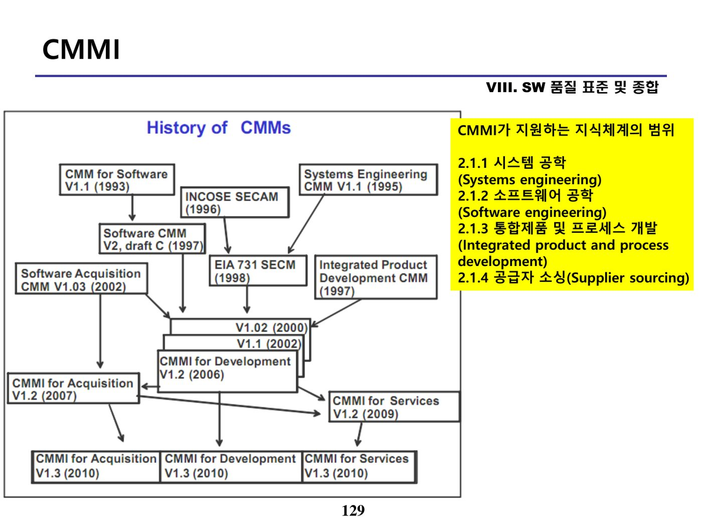
CMMI 22개 프로세스 영역(PA)은 조직 관리를 지원하는 상위 카테고리로 구성되며, 단계적 표현(Staged)과 연속적 표현(Continuous) 2가지 모델로 성숙도를 평가한다는 점은 SE08에서 다룬 내용과 동일하다. 여기서는 CMMI v2.0의 변경사항을 중점적으로 정리한다.
라. CMMI v2.0(2018년 개정)의 주요 변경사항
| 변경 항목 | CMMI v1.3(기존) | CMMI v2.0(2018.3.28 발표) |
|---|---|---|
| 구조 | 22개 프로세스 영역(Process Area) | 4개 카테고리(Category) · 9개 Capability Area · 20개 Practice Area로 재구성 |
| 카테고리(예시) | - | Doing(Ensuring Quality, Engineering & Developing Product 등), Managing, Enabling, Improving |
| 애자일 반영 | 미반영 | Agile 개발 방식론의 실무 관행을 반영 |
| 평가 방법론(SCAMPI) | 단일 방식 중심 | 여러 평가 방법론(SCAMPI 변형)을 다양하게 적용 가능 |
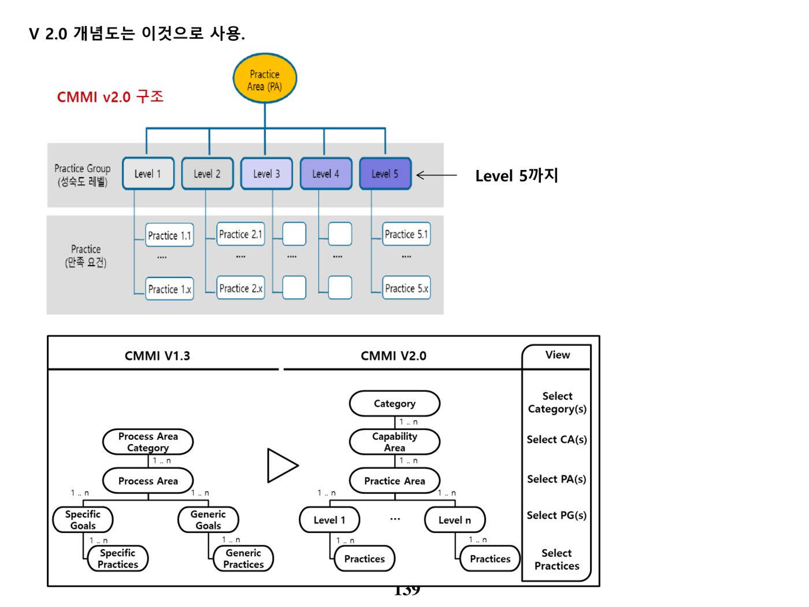
CMMI v2.0의 정확한 구조는 "5개 카테고리·10개 Capability Area·25개 Practice Area"가 아니라 "4개 카테고리·9개 Capability Area·20개 Practice Area"다. 시험에서는 숫자를 살짝 바꾼 오답 선지(5/10/25 등)가 자주 등장하므로 4-9-20이라는 숫자 자체를 정확히 암기해야 한다.
9. ISO 26262와 기능안전표준(ASIL) (원본 p.142-150)
가. ISO 26262 개요
ISO 26262는 자동차에 탑재되는 전기·전자 시스템의 SW 오류로 인한 사고를 방지하기 위해 제정된 자동차 기능안전 국제 규격이다. 일반 전기·전자 시스템의 기능안전 표준인 IEC 61508에서 자동차 도메인에 특화된 부분을 별도로 도출해 제정한 것으로, AUTOSAR(자동차 소프트웨어 표준 플랫폼)와는 별개의 표준이다.
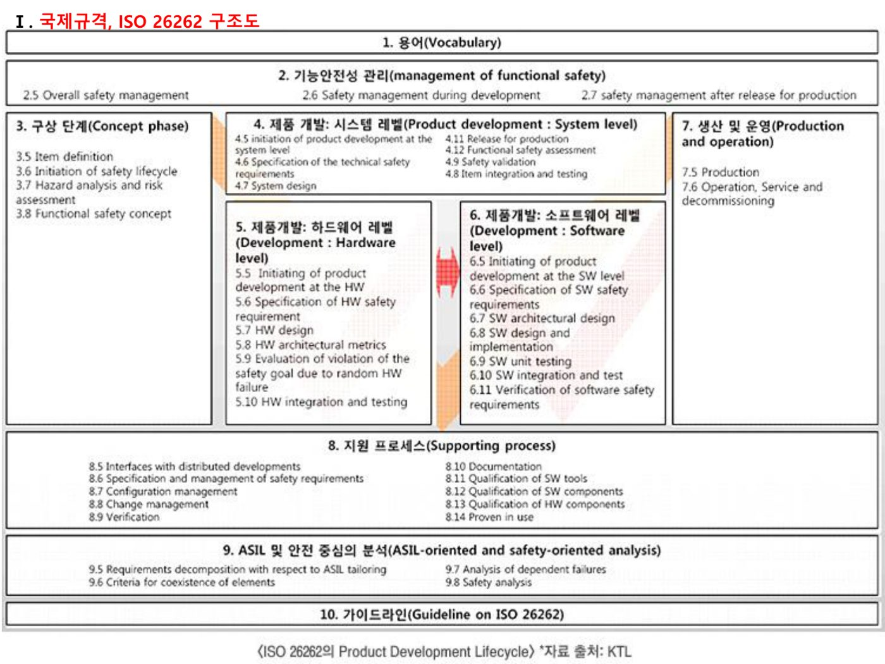
나. ASIL(Automotive Safety Integrity Level)
ASIL은 ISO 26262에서 정의하는 자동차 기능안전 무결성 등급으로, A~D 4단계로 구성된다(A~E 5단계라는 선지는 오답). 등급이 높을수록(D에 가까울수록) 더 엄격한 안전 요구사항이 적용된다.
| 결정 요소 | 영문 | 의미 |
|---|---|---|
| 심각도(Severity, S) | S0~S3 | 사고가 발생했을 때 피해의 심각한 정도 |
| 노출 가능성(Exposure, E) | E0~E4 | 해당 위험 상황에 노출될 확률(빈도) |
| 통제 가능성(Controllability, C) | C0~C3 | 운전자가 위험 상황을 통제하여 사고를 회피할 수 있는 정도 |
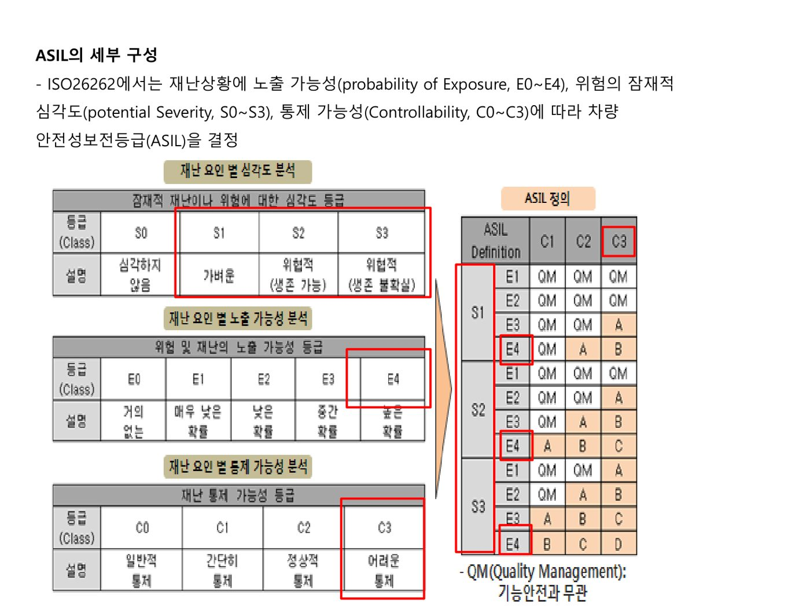
세 요소(S·E·C)를 조합해 판정한 결과, 위험도가 낮으면 QM(Quality Management, 일반 품질관리로 충분) 등급으로 분류되고, 위험도가 가장 높을 때만 ASIL D가 부여된다.
다. 안전 기능 요구사항 도출 절차
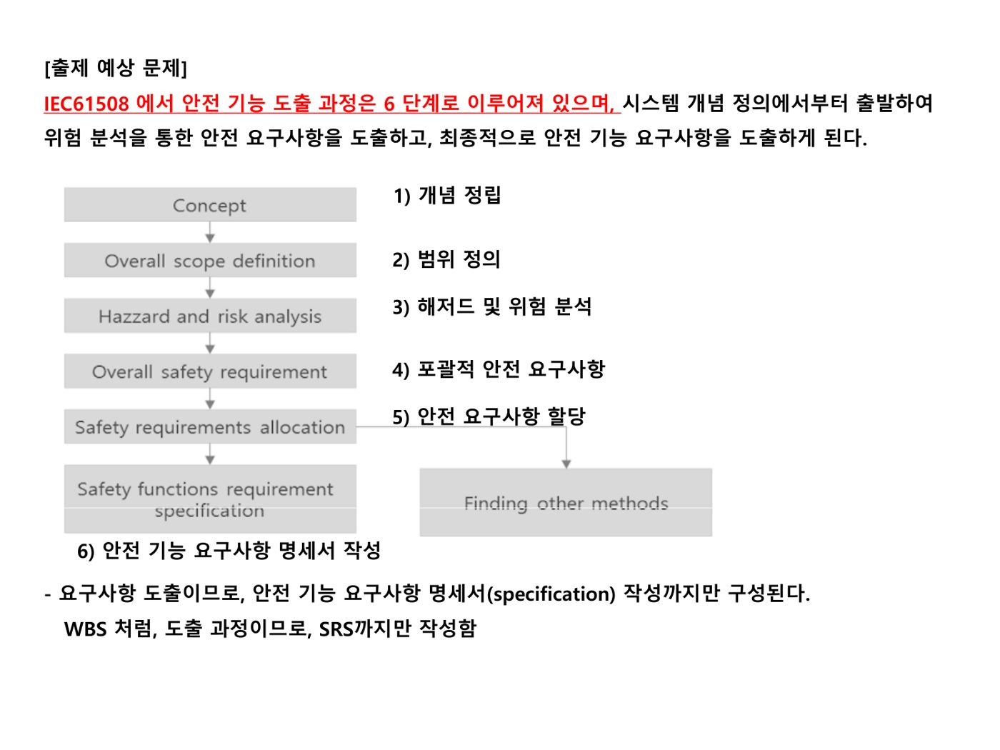
이 절차는 개념 정립 → 범위 정의 → 해저드/위험 분석 → 포괄적 안전 요구사항 도출 → 안전 기능 요구사항 할당 → 안전 기능 요구사항 명세서(Specification) 작성 순으로 진행되며, 요구사항 도출 단계이므로 WBS·시험·도출 과정이며 SRS(소프트웨어 요구사항 명세서) 수준까지만 작성된다.
라. 분야별 기능안전 표준 비교
| 분야 | 표준 |
|---|---|
| 자동차 | ISO 26262 |
| 일반 전기·전자·프로그래머블 전자시스템 | IEC 61508(모든 기능안전 표준의 근간) |
| 의료기기·소프트웨어 | IEC 60601, IEC 62304, ISO 14971(의료기기 위험관리) |
| 항공기 | DO-178B/C |
| 원자력 | IEC 61226, IEC 60880 |
| 철도 | IEC 62278/62279 |
10. ITIL(V2/V3/V4) (원본 p.151-168)
가. ITIL 프레임워크 개요
ITIL(Information Technology Infrastructure Library)은 IT 서비스 관리의 효과적 방식(Best Practice)을 모은 표준 지침서로, 글로벌 산업 우수 사례(Global Industry Best Practice)를 반영해 지속적으로 개정되고 있다.
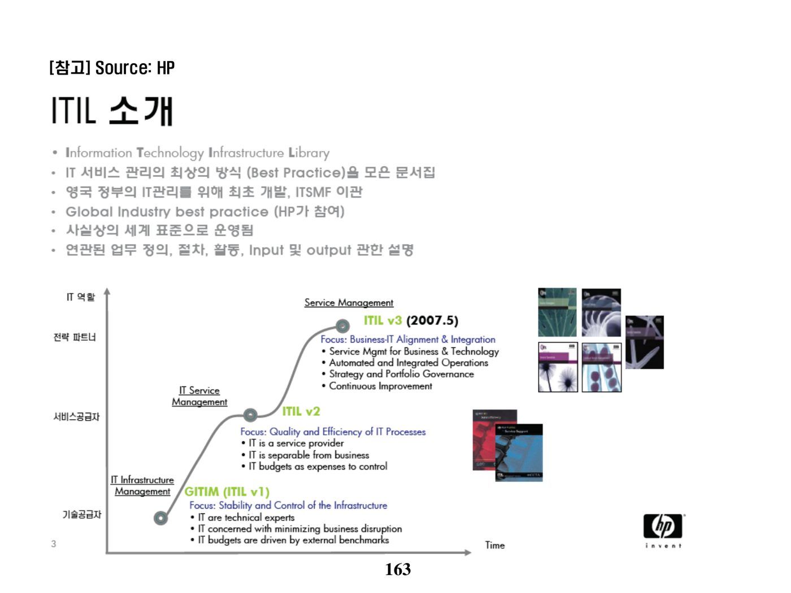
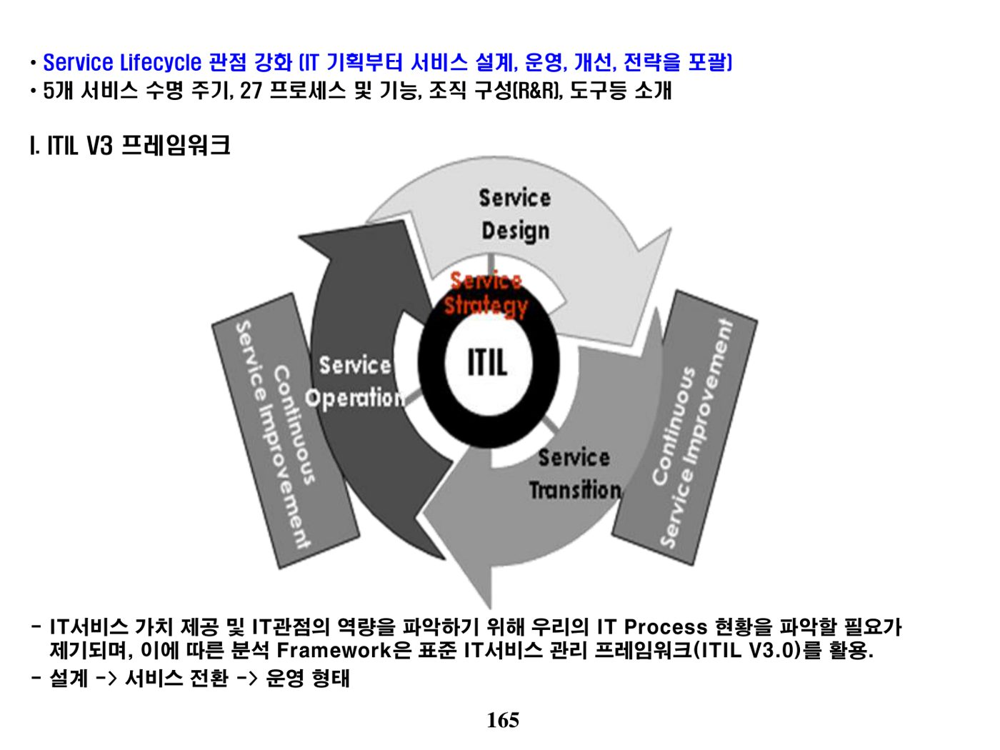
나. ITIL V2 — Service Support(쓰데이피씨알씨)와 Service Delivery(AC2FSL)
ITIL V2는 Service Support와 Service Delivery 2대 프로세스 그룹으로 구성된다. 각 그룹의 하위 프로세스는 앞 글자를 따 아래와 같이 암기한다.
| 그룹 | 하위 프로세스 | 암기 니모닉 |
|---|---|---|
| Service Support(서비스 지원) | 서비스 데스크, 인시던트 관리, 문제 관리, 구성 관리, 릴리즈 관리, 변경 관리 | "쓰(서비스데스크)-데이(인시던트)-피(문제)-씨(구성)-알(릴리즈)-씨(변경)" |
| Service Delivery(서비스 제공) | 서비스 수준 관리, 재정 관리, 용량 관리, 가용성 관리, IT 서비스연속성 관리 | "AC2FSL"(Availability·Capacity·Continuity·Financial·Service Level) |
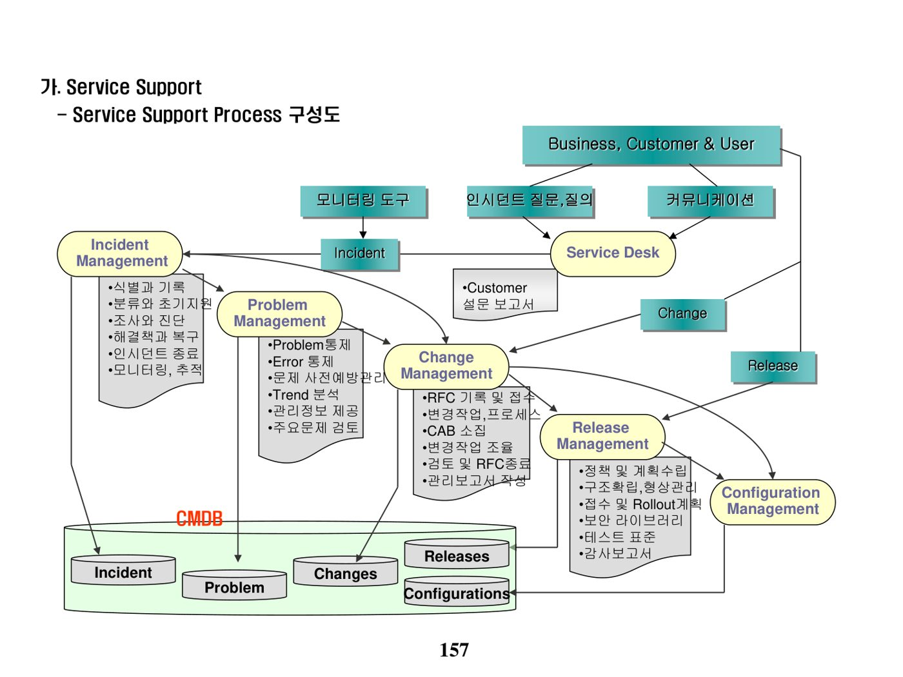
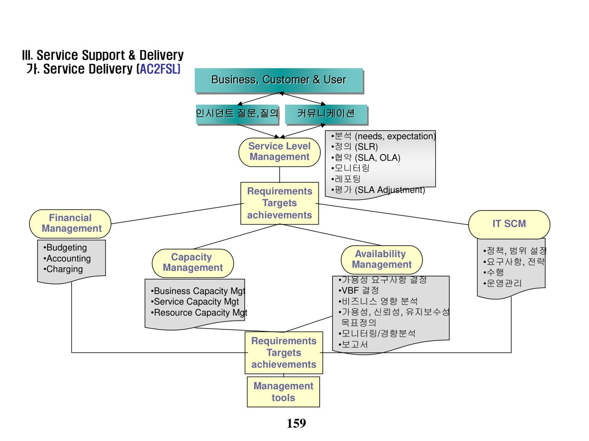
다. ITIL V3 → V4로의 변화
| 구분 | 내용 |
|---|---|
| ITIL V3(2007.5) | Service Strategy·Design·Transition·Operation·CSI(Continual Service Improvement) 5대 라이프사이클로 구성 |
| ITIL V4(2019.2 도입) | Tailoring 개념과 Agile·DevOps 트렌드를 반영. 서비스 관리 지원을 위해 기존 CMDB(Configuration Management Database)를 SKMS(Service Knowledge Management System)로 대체·확장 |
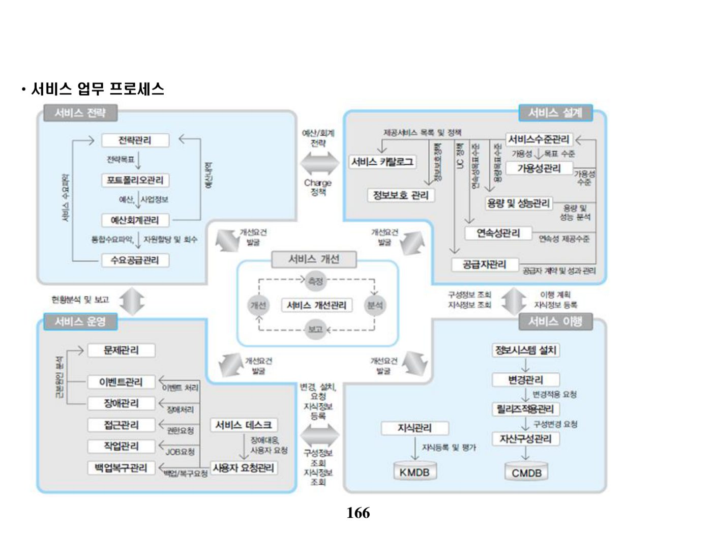
ITIL V4는 유연한 프레임워크로서 조직이 다양한 프레임워크·접근 방식을 통합할 필요를 반영해 실무 관행(Practice)에 애자일·DevOps를 폭넓게 접목할 수 있도록 개편되었다.
11. SW 유지보수·재공학·역공학 (원본 p.169-175)
가. SW 유지보수의 4가지 분류(시점 기준)
| 유형 | 설명 |
|---|---|
| 완전적(Perfective) 유지보수 | 기능 추가·변경 등 성능 개선을 위한 유지보수. 가장 많은 비중을 차지(수행 빈도 최다) |
| 적응적(Adaptive) 유지보수 | 운영체제·하드웨어 등 환경 변화에 SW를 적응시키기 위한 유지보수(예: Windows→Linux 이식) |
| 수정적(Corrective) 유지보수 | 운영 중 발견된 결함(기능 오류)을 수정하는 유지보수 |
| 예방적(Preventive) 유지보수 | 향후 발생할 수 있는 문제를 사전에 방지하기 위해 문서·코드 일관성 등을 개선하는 유지보수 |
실제 통계상 유지보수 활동 중 가장 큰 비중을 차지하는 것은 결함 수정이 아니라 완전적 유지보수(기능 추가·개선)라는 점이 자주 출제된다. 예를 들어 "비디오 대여 관리 시스템에 장르별 대여 통계 기능을 추가"하는 것은 완전적 유지보수의 대표 사례다.
나. 재공학(Re-engineering)과 역공학(Reverse Engineering)
| 구분 | 정의 |
|---|---|
| 재공학(Re-engineering) | 기존 소프트웨어를 분석해 정보를 추출하고, 이를 다시 순공학(Forward Engineering)을 사용해 새로 구현함으로써 유지보수성을 개선한 소프트웨어 부품으로 만들어내는 기술 작업 |
| 역공학(Reverse Engineering) | 개발 단계를 역으로 거슬러 올라가, 기존에 개발된 시스템의 코드나 데이터로부터 설계명세서·요구분석서 등을 도출해 내는 작업 |
재공학의 5단계 절차는 인벤토리 분석 → 문서 재구성 → 역공학 → 코드 재구성 → 데이터 재구성 → 순공학 순으로 진행되며, 역공학은 재공학의 한 단계에 포함되는 개념이라는 점에서 두 용어를 혼동하지 않도록 주의한다.
12. FOSS 오픈소스 라이선스 (원본 p.176-193)
가. OSS(FOSS)의 5대 조건
OSI(Open Source Initiative)는 오픈소스로 인정받기 위한 10가지 조건을 정의하고 이에 해당하는지 판단해 인증 마크를 부여한다. 핵심 조건은 다음과 같다.
| 조건 | 설명 |
|---|---|
| 자유배포(Free Redistribution) | 소프트웨어의 일부 또는 전부를 재배포하지 못하도록 제한을 설정할 수 없음 |
| 소스 코드(Source Code) | 프로그램 저작물에는 반드시 소스 코드가 포함되거나, 무료 다운로드 등을 통해 소스 코드를 제공받을 수 있도록 조치해야 함 |
| 파생 저작물(Derived Works) | 원저작물의 개작이나 이를 이용한 2차적 창작이 허용되어야 하며, 동일 조건으로 재배포할 수 있어야 함 |
| 소스코드의 보존 | 개작 목적의 소스코드·패치 파일 제공 시, 라이선스에서 소스코드 수정을 제한하는 항목을 추가할 수 있음 |
| 차별 금지 | 개인·단체 및 사용 분야에 대한 차별을 금지 |
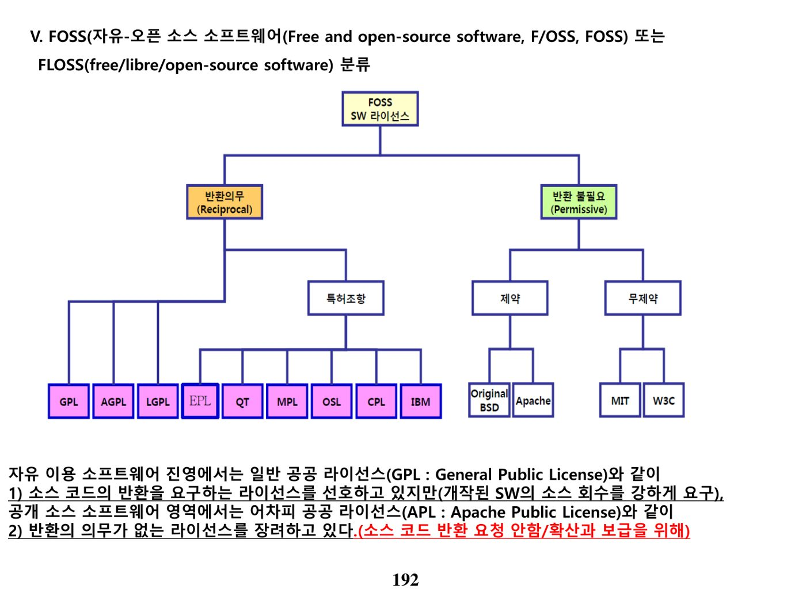
나. 주요 오픈소스 라이선스 비교
| 라이선스 | 정의/핵심 내용 |
|---|---|
| GPL(GNU General Public License) | 자유소프트웨어재단(FSF)이 저작권을 확보한 뒤 자유로운 공유·수정을 보장하기 위해 만든 라이선스. 유료 판매는 가능하지만 전체 소스코드는 반드시 무료로 공개해야 함. GPL 3.0에서는 DRM 관련 내용 추가, 특허 소송 제기 시 라이선스가 종료됨을 명시 |
| LGPL(GNU Lesser GPL) | GPL보다 완화된 라이선스로, 응용 프로그램에서 LGPL 라이브러리를 링크해 사용할 경우 응용 프로그램 자신의 소스코드는 공개하지 않아도 됨. 단, LGPL 라이브러리 자체를 수정한 경우에는 그 수정한 부분을 LGPL로 공개해야 함 |
| BSD License | GPL/LGPL보다 제한이 적은 라이선스. 소스코드를 수정한 후 공개하지 않고 다른(비 BSD) 라이선스로 판매하는 것도 가능 |
| MPL(Mozilla Public License) | 소스 코드와 실행 파일을 분리해, 소스코드는 공개하되 실행 파일은 독점 라이선스로 배포 가능하도록 한 라이선스 |
| Apache License | BSD와 유사하게 소스코드 공개 의무가 없는 라이선스. 다만 "Apache"라는 이름에 대한 상표권은 침해할 수 없음 |
| 라이선스 | 무료 이용 | 배포 허용 | 이용상 제한 없음 | 소스코드 취득·수정 | 파생물 재공개 | 상용SW 연결가능 |
|---|---|---|---|---|---|---|
| Public Domain | O | O | O | O | - | O |
| Shareware | O | O | - | - | - | - |
| Freeware | O | O | O | - | - | - |
| GPL | O | O | O | O | O | X |
| LGPL | O | O | O | O | O(라이브러리만 재공개) | O |
| BSD | O | O | O | O | X | O |
다. 오픈소스 라이선스 양립성(Compatibility)
서로 다른 의무사항을 가진 공개SW 라이선스는 의무사항 충돌로 인해 양립(Compatibility)이 불가능한 경우가 발생할 수 있다. 기존에 만들어진 코드를 재사용·결합하는 과정에서 각 코드의 라이선스끼리 상충하면 문제가 되며, 양립이 불가능한 경우 해당 결합물은 배포할 수 없다. 모질라 프로젝트는 결과물을 MPL·GPL·LGPL 3가지 라이선스로 배포하도록 하여 양립성 불확실성을 해소했고, GPL 3.0은 특허보복조항(11조)을 포함해 Apache License 2.0 및 AGPL(Affero GPL) 3.0과도 양립 가능해졌다.
라. FOSS의 장단점
| 구분 | 내용 |
|---|---|
| 장점 | Low Entry Cost(초기 비용 저렴), 빠르고 유연한 개발, 개방형 포맷·프로토콜을 통한 상호운용성, 안정적 동작, 강력한 네트워킹 기능 |
| 단점 | GUI 응용프로그램 부족, 빈약한 문서화, 불확실한 개발 로드맵, 지적재산권(Royalty-free 강제로 인한 제약) |
13. SW 비용산정과 규모 보정계수(2018년 개정) (원본 p.194-213)
가. SW 비용산정 방법 총정리
| 구분 | 방법 | 내용 |
|---|---|---|
| SW 규모산정(원가산정) | LOC 방법 | 각 기능의 원시 코드 라인 수(LOC)의 낙관치·기대치·비관치를 3점 견적으로 측정하여 예측치를 구하고 이를 비용 산정에 활용 |
| Function Point | 기능점수(FP) 기준 산정. 2019년 기준 1FP당 519,203원, 이윤은 개발원가의 25%를 초과할 수 없으며 소프트웨어 개발비 = 보정후 개발원가 + 이윤 + 직접경비 | |
| 간이법/정규법 | 간이법은 개발요건만 정의되면 예산수립부터 폐기까지 전 단계에서 적용 가능. 정규법(정통법)은 개발요건 및 요건별 상세설계정보가 제공되는 시점(설계공정 이후)부터 적용 | |
| COCOMO | KDSI(단위 K라인 수) 기반의 산정 모델(Constructive Cost Model) | |
| SW사업 대가산정 가이드 | 2018년 개정판(SW산업진흥법 제13조에 근거) — 국내 공공 SW사업의 표준 대가산정 절차를 규정 | |
| 하드웨어 규모산정 | 3가지 방법 | 수식계산법, 참조법, 시뮬레이션법 |
나. SW 대가산정 가이드(2018)의 기능점수 대가산정 적용 대상
기능점수(FP) 대가산정 방법은 모든 SW사업에 적용되는 것이 아니라 일부 사업 유형에만 적용된다. ISP 수립·정보보안 컨설팅·SW 운영 사업은 대상이 아니며, SW 유지관리 사업과 SW 개발 사업(신규 개발) 만이 기능점수 방식이 적용되는 대표 사례다(전체 6개 보기 중 2개가 해당).
| SW사업 구분 | 대가산정 유형 | 대가산정 방법 |
|---|---|---|
| 정보화전략계획(ISP) 수립 | 투입공수(M/M)에 의한 방식 | |
| ISP/ISMP 수립 | 투입공수에 의한 방식 | |
| EA/ITA 수립 | 투입공수에 의한 방식 | |
| SW 구현(개발) 사업 | 기능점수 | 기능점수 방식에 의한 방식 |
| SW 유지관리 사업 | 기능점수 | 성능 개선형 유지관리는 기능점수 방식에 의한 방식, 오류 수정형은 투입공수 방식 |
| SW 운영 사업 | 투입공수에 의한 방식 | |
| SW 재개발 사업 | 재개발 기능점수 방식에 의한 방식 | |
기능점수 방식의 국제표준은 ISO/IEC 14143이다. ILF(내부논리파일)는 측정 대상 애플리케이션 내부에서 유지되는(생성·수정·삭제 가능한) 데이터 그룹이며, "오직 참조만 되는 파일"이라는 설명은 ILF가 아니라 EIF(외부연계파일)의 정의이므로 주의한다.
다. 2018년 개정 SW사업대가 산정 모델(규모 보정계수)
2018년 개정판에서는 규모 보정계수 산정식이 변경되었다. 개발원가 산정에 사용되는 규모 보정계수는 아래와 같이 계산한다.
| 구분 | 산정식 |
|---|---|
| 규모 보정계수(2018년 개정) | = 0.4057 × (log₁₀규모점수) + 0.9878 (단, 500FP 미만인 경우 1.2800, 3,000FP 초과인 경우 1.1530을 적용) |
| 규모 보정계수(2017년 이전, 참고용) | = 0.108 × Log(e)(FP 값) + 0.229 (단, 규모 300 미만이면 곱하지 않고 별도 값 적용) |
최종 보정후 개발원가는 보정전 개발원가 × 규모 보정계수 × 연계복잡성수준 보정계수 × 성능요구수준 보정계수 × 다중사이트운영성 보정계수 × 보안성수준 보정계수로 계산하며, 소프트웨어 개발비 = 보정후 개발원가 + 이윤 + 직접경비다. 애플리케이션 복잡도 보정계수는 연계복잡성 수준·성능요구 수준·다중사이트 운영성·보안성 수준 4가지로 구분되며, "언어"는 애플리케이션 복잡도 보정계수 항목이 아니라 별도의 언어 보정계수 항목이다.
| 보정 항목 | 구분 |
|---|---|
| 애플리케이션 복잡도 보정계수(2018년 신설) | 연계복잡성 수준, 성능요구 수준, 다중사이트 운영성, 보안성 수준 |
| 언어 보정계수 | Assembly/Basic(1.9), C/JAVA/CHILL/PROLOG/Unix Shell Scripts(1.0), COBOL/FORTRAN/PL·1/PASCAL(1.0), Script default(0.8), 4GL·Powerbuilder·SQL·Visual Basic(0.8), Excel/Spreadsheet(0.6) 등 개발 언어별 계수를 별도 적용 |
| 품질 및 특성 보정계수 | = (0.025 × 총영향도) + 1 (총영향도 = 분산처리 + 성능 + 신뢰성 + 다중사이트) — 항목 수 4가지로 산정 |
14. FP 정규법 종합 실습 (원본 p.201-226)
가. FP(Function Point)의 정의와 발전
FP는 소프트웨어의 양과 질을 동시에 고려한 규모 측정 방식으로, 1979년 IBM(Allen Albrecht)이 정보처리 규모와 기능적 복잡도를 사용자 관점에서 측정하기 위해 고안했다. 프로그램 재사용으로 생산성이 향상되면서 소스코드 양(LOC) 중심 산정의 한계를 극복하기 위해 등장했다.
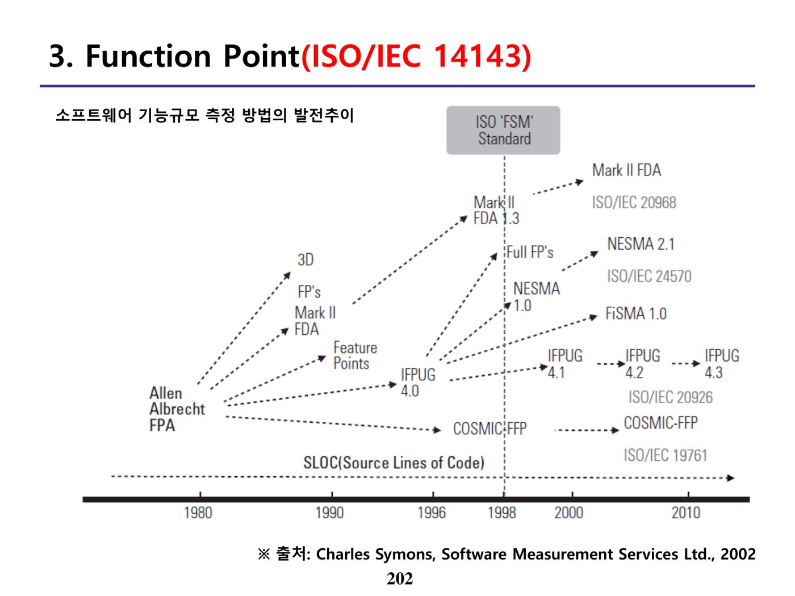
FP는 최종 사용자 입장에서 SW 규모를 견적하며(개발자의 소스코드 양과 무관), 개발환경·기술에 무관하게 측정 가능하고 사용자 요구에 따라 설계 시점부터 개발 중에도 측정할 수 있다. 다만 모든 기능과 복잡도가 식별되어야만 정확히 측정 가능하므로, 제안 단계까지는 추정(Estimate)만 가능하고 정식 측정(산정)은 불가능하다.
나. FP 산정 절차(정규법 7단계)
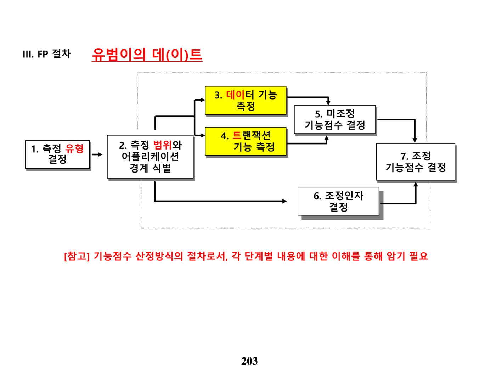
| 단계 | 내용 |
|---|---|
| 1. 측정 유형 결정 | 개발 프로젝트(SI 종료 후 인도), 개선 프로젝트(추가·수정·삭제), 어플리케이션(설치된 기능점수 측정) 중 선택 |
| 2. 측정 범위·경계 식별 | 개별 변경 SW의 전체 범위 결정 및 각 어플리케이션 경계 분류 |
| 3. 데이터 기능 측정 | 내부논리파일(ILF)·외부연계파일(EIF)의 RET(Record Element Type)·DET(Data Element Type) 수 도출 |
| 4. 트랜잭션 기능 측정 | 외부입력(EI)·외부출력(EO)·외부조회(EQ)의 FTR(File Type Reference)·DET 수 식별 |
| 5. 미조정 기능점수 결정 | 데이터 기능점수 + 트랜잭션 기능점수의 합 |
| 6. 조정인자 결정 | 14개 시스템 특성 항목을 0~5점으로 가중치 부여 후 (합계×0.01)+0.65 공식으로 계산(0.65~1.35 범위) |
| 7. 조정 기능점수 결정 | 미조정 기능점수 × 조정인자 |
트랜잭션 기능 유형은 다음 3가지로 구분한다. 외부입력(EI)은 어플리케이션 안으로 들어오는 데이터를 처리(입력·수정·삭제·설정·승인)하는 단위 프로세스, 외부출력(EO)은 계산 데이터를 생성하거나 시스템 동작을 변경하며 결과를 밖으로 보여주는 단위 프로세스(예: 환율 적용, 월간 판매실적 집계), 외부조회(EQ)는 DB의 데이터를 계산·가공 없이 그대로 검색해 제공하는 단위 프로세스(예: 게시판 목록 조회)다. EQ는 계산 데이터를 생성하지 않는다는 점이 EO와의 핵심 구분 포인트다.
다. 정규법 복잡도 매트릭스(ILF/EIF, EI/EO/EQ)
| ILF(내부논리파일) 복잡도 | DET 1~19 | DET 20~50 | DET 51 이상 |
|---|---|---|---|
| RET 1 | 낮음(7) | 낮음(7) | 보통(10) |
| RET 2~5 | 낮음(7) | 보통(10) | 높음(15) |
| RET 6 이상 | 보통(10) | 높음(15) | 높음(15) |
| EIF(외부연계파일) 복잡도 | DET 1~19 | DET 20~50 | DET 51 이상 |
|---|---|---|---|
| RET 1 | 낮음(5) | 낮음(5) | 보통(7) |
| RET 2~5 | 낮음(5) | 보통(7) | 높음(10) |
| RET 6 이상 | 보통(7) | 높음(10) | 높음(10) |
| EI(외부입력) 복잡도/가중치 | FTR 0~1 | FTR 2 | FTR 3 이상 |
|---|---|---|---|
| DET 1~4 | 낮음(3) | 낮음(3) | 보통(4) |
| DET 5~15 | 낮음(3) | 보통(4) | 높음(6) |
| DET 16 이상 | 보통(4) | 높음(6) | 높음(6) |
| EO·EQ(외부출력/조회) 복잡도/가중치 | FTR 0~1 | FTR 2~3 | FTR 4 이상 |
|---|---|---|---|
| DET 1~5 | 낮음 | 낮음 | 보통 |
| DET 6~19 | 낮음 | 보통 | 높음 |
| DET 20 이상 | 보통 | 높음 | 높음 |
라. 간이법 평균복잡도 가중치(ISBSG 기준)
| 기능유형 | 평균복잡도 가중치 |
|---|---|
| EI(외부입력) | 4.3 |
| EO(외부출력) | 5.4 |
| EQ(외부조회) | 3.8 |
| ILF(내부논리파일) | 7.4 |
| EIF(외부연계파일) | 5.5 |
"외부연계파일(EIF)의 평균복잡도 가중치는 5.4이다"는 EO(5.4)와 EIF(5.5)를 혼동시킨 오답이며, "외부조회(EQ)의 평균복잡도 가중치는 3.9이다"도 정확한 값(3.8)과 다른 함정 선지로 자주 출제된다.
마. 정규법(사례) — 사원-부양가족 데이터 기능 측정
사원정보를 관리하는 개발 프로젝트의 ERD를 설계할 때, 사원 엔티티에 부양가족 서브그룹이 연계되어 있다면 RET는 2개(사원, 부양가족)로 식별된다.
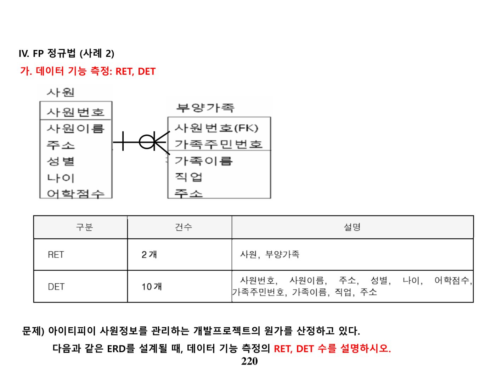
이 사례에서 아이템 정보를 관리하는 개발 프로젝트의 원가를 산정할 때, ERD를 설계했을 때 데이터 기능 측정 결과 RET 2개(사원, 부양가족), DET 10개(사원번호·사원이름·주소·성별·나이·어학점수·가족주민번호·가족이름·관계·가족번호)로 식별되며, 이는 정규법 복잡도 매트릭스에서 ILF "보통" 등급에 해당한다.
바. 간이법 사례 종합 — 사원 DB 기능점수 산정
내부논리파일(ILF) 3개(사원DB·부서DB·급여DB 등)와 외부연계파일(EIF) 1개(외환DB 등)를 갖는 시스템에서, 간이법 평균복잡도 가중치를 적용해 미조정 기능점수를 산정하는 절차는 다음과 같다.
| 단계 | 계산 | 결과 |
|---|---|---|
| 1. 데이터 기능 측정 | ILF 3개×7.4 + EIF 1개×5.5 | 22.2 + 5.5 = 27.7 |
| 2. 트랜잭션 기능 측정 | EO 1개×5.4 + EQ 1개×3.8(조회·출력 위주로 EI 없음) | 5.4 + 3.8 = 9.2 |
| 3. 미조정 기능점수 | 27.7 + 9.2 | 36.9 |
| 4. 조정인자 결정 | 14개 항목을 각 3점으로 가정 → ((14×3)×0.01)+0.65 | 1.07 |
| 5. 조정 기능점수 | 36.9 × 1.07 | 39.48 FP |
2019년 기준 기능점수당 단가는 519,203원이므로, 위 사례의 개발원가는 약 39.48FP × 519,203원 규모로 환산할 수 있다. 이처럼 간이법은 데이터 기능(ILF·EIF)과 트랜잭션 기능(EI·EO·EQ)에 평균복잡도 가중치를 곱해 합산한 뒤 조정인자를 반영하는 순서로 계산한다.
📚 전체 기출·예상문제 (26문항) — 원문 수록
본 강좌 원본 PDF에 수록된 기출·예상문제를 빠짐없이 원문 그대로 정리했습니다. 정답·해설은 강의 원문 기준입니다.